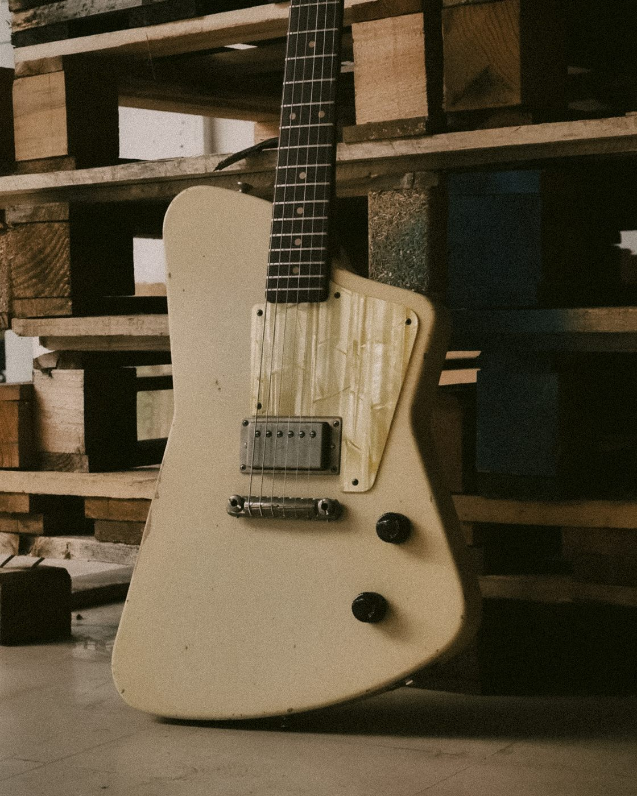

Calibración de violín
Ajustá y poné a punto un violín, trabajando el puente, las clavijas y los accesorios.
$300.000
6 cuotas sin interés
Paleta de variables definidas en :root (css/style.css).
--cream · #F8F7F1
--orange · #FF5F2F
--black · #303030
--gray · #8C8C8C
--course-bg · #141618
celeste (degradados) · #8AAFB9
Tres familias: Syne para títulos, DM Sans para texto de cuerpo, Chivo Mono para labels/UI.
--font-title (Syne 700)
64px
El próximo instrumento
--font-title (Syne 700)
42px
La diferencia está en el taller
--font-title (Syne 600)
28px
Construí tu guitarra criolla
--font-text (DM Sans 400)
18px
Trabajá con herramientas profesionales, materiales reales e instrumentos que recorren cada etapa del oficio.
--font-text (DM Sans 400)
14px
6 cuotas sin interés
--font-mono (Chivo Mono 400)
15px
+ DE MAESTRO A APRENDIZ
--font-mono (Chivo Mono 400)
13px
CURSO MÁS ELEGIDO
Todos comparten el mismo patrón de hover: cambio de color + transform: scale(0.94).
.btn.hero-btn
.course-nav-cta / .nav-cta
.course-btn-secondary
Usados en carruseles (galería de instrumentos, testimonios del curso).
.gallery-arrow
Elementos gráficos chicos que se repiten a lo largo del sitio para separar y marcar contenido.
+ DE MAESTRO A APRENDIZ
.slash — prefijo de los labels de sección
.manifesto-line / .stats-line — crecen desde un costado al hacer scroll
.stepper-line / .stepper-dot — "Paso a paso"
.accordion-icon (cerrado)
.accordion-icon.is-active (abierto → "-")
Etiqueta que marca la card destacada de la sección "Cursos", superpuesta al borde superior.
.course-badge
Manchas radiales celeste (#8AAFB9) y naranja con blur, más el grano/ruido sutil, usados de fondo en la sección "Paso a paso".
.paso-glow--blue · .paso-glow--orange · .paso-noise
Card default y card destacada (.course-card--featured), con degradado naranja/celeste al hacer hover.
Ajustá y poné a punto un violín, trabajando el puente, las clavijas y los accesorios.
$300.000
6 cuotas sin interés
Diseñá y construí una guitarra hecha con tus propias manos.
$560.000
6 cuotas sin interés
Aprendé técnicas de personalización para transformar instrumentos con acabados, colores y detalles únicos.
$210.000
6 cuotas sin interés
El curso superó mis expectativas. Terminé con una guitarra criolla que refleja el sonido que buscaba.
Números animados (cuentan desde 0 al entrar en pantalla) con líneas divisorias sutiles.
30 +
Años de experiencia
500 +
Instrumentos realizados
100 %
Trabajo artesanal

Guitarra eléctrica